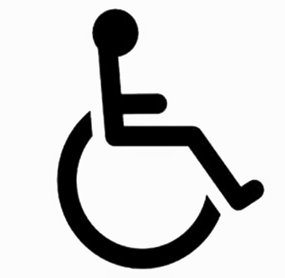
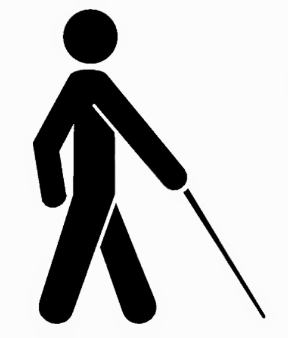

Ricardo Steinmetz Alves
Data de nascimeto e morte: 15 de dezembro de 1988 e ainda está vivo
Ricardo Steinmetz Alves, mais conhecido como Ricardinho, é um futebolista paralímpico brasileiro. Deficiente visual desde os 8 anos de idade, ele é tri-campeão paralímpico no futebol para cegos. Atualmente joga pelo clube Acergs-RS.
Frida Kahlo
Data de nacimento e morte: 6 de julho de 1907 - 13 de julho de 1954
Luís Vaz de Camões foi um poeta nacional de Portugal, considerado uma das maiores figuras da literatura lusófona e um dos grandes poetas da tradição ocidental. Pouco se sabe com certeza sobre a sua vida. Aparentemente nasceu em Lisboa, de uma família da pequena nobreza.
Olá seja bem vindo ao nosso site de acessibilidade
e inclusão
Será apresentado o que é inclusão, pessoas famosas com deficiências, as suas deficiências e as suas biografias.
Famosos com deficiência
-

Stephen Hawking
Tetraplégico -
Van Gogh
Transtorno bipolar -

Ricardo Steinmetz Alves
Toxoplasmose Congênita
Famosos
Stephen Hawking Van Gogh Ricardo Steinmetz Alves Frida Kahlo
Direitos reservados à: